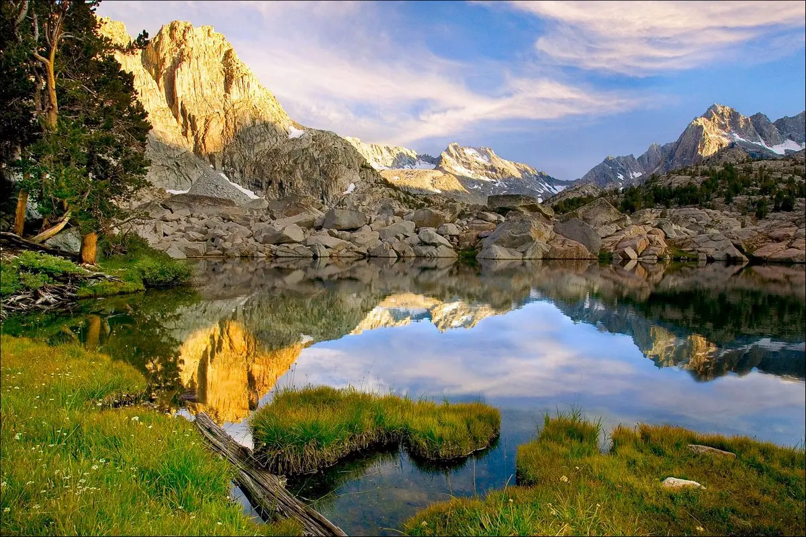

Штат Калифорния расположен на Западе США и относится к тихоокеанским штатам. Калифорния граничит со штатами Орегон на севере, Невада на востоке, Аризона на юго-востоке, а также с Мексикой на юге.
На западе побережье штата омывается водами Тихого океана.
Калифорния занимает третье место по площади среди всех штатов США (после Аляски и Техаса).

На территории штата расположены самая высокая (гора Маунт-Уитни, 4 421 метр над уровнем моря) и самая низкая (впадина Бэдуотер-Бейсин в Долине Смерти, 86 метров ниже уровня моря) точки континентальной части США.
Калифорния расположена на территории двух физико-географических регионов США: Межгорных плато (часть восточной Калифорнии) и Тихооокеанских гор (бо́льшая часть штата).
На территории штата выделяют несколько географических регионов: горы Кламат, Каскадные, Сьерра-Невада, плато Модок, район Большого бассейна, Береговые хребты, Калифорнийская долина (все эти области составляют Северную Калифорнию), а также Поперечные горы, горы Нижней Калифорнии, бассейн Лос-Анджелеса, пустыни Мохаве и Колорадо и острова Чаннел (Южная Калифорния).
Самая большая река, протекающая в штате Калифорния (а также крупнейшая река на юго-западе США и пятая самая длинная река в США) — образующая границу с Аризоной Колорадо-Ривер, длина которой 2 330 км. Другие крупные реки штата — Сакраменто-Ривер (719 км, самая длинная река, полностью протекающая в пределах штата), Сан-Хоакин-Ривер (587 км), Кламат-Ривер (423 км).
В Калифорнии много озер, но самое известное из них — расположенное на высоте 1 897 метров над уровнем моря в горах Сьерра-Невада (на границе с Невадой) озеро Тахо. Это крупнейшее высокогорное озеро в Северной Америке, его длина 35 км, ширина достигает 19 км, а площадь поверхности — около 490 км². Объем озера Тахо — около 150 км³ (в Соединенных Штатах Америкик больше только Великие озера), средняя глубина составляет около 300 метров, а максимальная достигает 501 метра (в США глубже только озеро Крейтер-Лейк в Орегоне).
Самый большой по площади поверхности водоем, полностью расположенный в пределах Калифорнии,— озеро Солтон-Си в Южной Калифорнии. Это обширное (около 824 км²), но достаточно мелкое (максимальная глубина — 13 метров) бессточное озеро с соленой водой, поверхность которого на 72 метра ниже уровня моря.
Самое большой пресноводный водоем, полностью расположенный в пределах штата — озеро Клир-Лейк в Северной Калифорнии (к северу от Сан-Франциско). Озеро Клир-Лейк считается самым старым в Северной Америке, его длина 31 км, ширина достигает 13 км, площадь поверхности — около 180 км², объем — около 1,4 км³, средняя глубина составляет около 8 метров, а максимальная достигает 18 метров.
Самые большие водохранилища Калифорнии — Шаста-Лейк на реке Сакраменто (около 120 км²), Лейк-Альманор на реке Фетер (114 км²), Лейк-Берриесса на реке Путах-Крик (84 км²), Тринити-Лейк на реке Тринити-Ривер (67 км²), Лейк-Оровилл на реке Фетер (64 км²).
Климат Калифорнии меняется в очень широких пределах (от жаркого пустынного до субарктического) в зависимости от широты региона, особенностей рельефа и близости к океанскому побережью. Для большинства прибрежных округов штата характерен мягкий (на севере) или жаркий средиземноморский или даже субтропический климат (на юге) с дождливой зимой, сухим летом и небольшими сезонными колебаниями температур. В пустынях внутренних районов штата очень сильно выражены сезонные (и суточные) перепады температур, здесь сухо, очень жарко летом и зачастую очень холодно зимой. В горах Калифорнии климат во многом определяется высотными условиями. Больше всего осадков выпадает на обращенных к океану горных склонах на северо-западе штата, а меньше всего — в пустынях на юго-востоке (Долина Смерти является самым жарким и самым сухим местом в Соединенных Штатах Америки).
В Калифорнии есть присущие только ей погодные особенности, как, например, горячий и сухой "ветер Санта-Анна", дующий иногда весной и осенью с восточных пустынь на прибрежные районы Южной Калифорнии или очень плотные "туманы Туле", опускающиеся осенью и зимой на долины Северной Калифорнии.
Разнообразие природных условий штата обуславливает и очень богатые растительный и животный мир, Калифорния является самым биологически разнообразным штатом США с более чем 40 000 видов растений и животных (в том числе редких и находящихся под угрозой исчезновения). Около трети территории штата покрыто лесами, в Калифорнии площадь лесных угодий больше, чем в любом другом штате США за исключением Аляски. Почти четверть всех видов растений, встречающихся в Северной Америке, растут в Калифорнии, здесь можно увидеть самые старые (сосна остистая межгорная, до 5 000 лет), самые высокие (секвойя, до 115 метров) и самые массивные (секвойядендрон или мамонтово дерево) деревья на Земле. Кроме того, в лесах Калифорнии растут сосны, дубы, клены, ели, эвкалипты, акации и многие другие растения. Самый известный представитель флоры пустынных регионов Калифорнии — юкка коротколистная (иначе называемая "дерево Иисуса" или "дерево Джошуа"), в честь которой назван один из Национальных парков штата. Большие площади в Калифорнии заняты чапаралем (зарослями кустарников, низкорослых деревьев и травянистых растений). В степях Калифорнии можно увидеть множество видов трав и цветов, самый известный их которых, калифорнийский мак, является одним из официальных символов штата.
В лесах, степях, пустынях и прибрежных водах Калифорнии живут около четырехсот видов млекопитающих, около шестисот видов птиц, а также множество других животных, в том числе черные медведи, олени (чернохвостые и олени Рузвельта), толстороги, пумы, рыси, лисы, койоты, зайцы, белки, опоссумы, кенгуровые крысы, бобры, выдры, морские львы, ястребы, соколы-сапсаны, калифорнийские кондоры и многие другие.
Национальный парк Чаннел-Айлендс расположен у тихоокеанского побережья Южной Калифорнии и включает в себя пять из восьми островов архипелага Чаннел-Айлендс: Анакапа, Санта-Барбара, Санта-Крус, Сан-Мигель и Санта-Роза. Острова Чаннел-Айлендс популярны у любителей пешего туризма и подводного плавания (здесь много красивых морских пещер), они интересны как своей живописной природой, так и давней историей (на островах сделано несколько важных археологических находок). Национальный парк Чаннел-Айлендс был создан в 1980 году, до того острова Анакапа и Санта-Барбара имели статус Национального памятника (с 1938 года).
Национальный парк Лассен-Волканик расположен на северо-востоке Калифорнии в южных отрогах Каскадных гор. Он включает в себя образованную несколькими вулканами и изрезанную ледниковыми каньонами горную область с поросшими лесами лавовыми плато, лугами, многочисленными озерами и ручьями. Лассен-Волканик — одна из немногих областей в мире, где на сравнительно небольшой площади можно найти четыре разных типа вулканов (купольный, щитовой, стратовулкан и шлаковый конус). Название парку дал Лассен-Пик — один из самых больших купольных вулканов в мире. Национальный парк Лассен-Волканик был создан в 1916 году, до того (с 1907 года) вулканы Лассен-Пик и Синдер-Коун имели статус Национальных памятников.
Национальный парк Долина Смерти расположен к востоку от гор Сьерра-Невада, на границе Калифорнии с соседним штатом Невада. Он включает в себя несколько долин между "Большим Бассейном" и пустыней Мохаве и является самым большим Национальным парком в континентальных штатах США. Национальный парк Долина Смерти — это обширная, очень жаркая и засушливая территория. В то же время парк является домом для многих видов растений и животных, которые сумели приспособиться к суровым пустынным условиям. Именно здесь находится самая низкая точка на территории Калифорнии и всех Соединенных Штатов Америки (впадина Бэдуотер, 86 метров ниже уровня моря). Национальный парк Долина Смерти был создан в 1994 году, до того (с 1933 года) он имел статус Национального памятника.
Национальный парк Кингс-Каньон находится на востоке Калифорнии в горах Сьерра-Невада и граничит с расположенным южнее Национальным парком Секвойя. Каньон, давший имя парку — это прорезанная ледником скалистая долина более полутора километров глубиной. Также на территории парка можно увидеть высокогорные луга, быстрые реки и его главную достопримечательность — одни из крупнейших в мире скоплений гигантских секвой. Большинство туристов привлекает в парк Кингс-Каньон знаменитая Грант-Гроув ("Роща Гранта"), где растет Секвойя генерала Гранта — второе по величине дерево в мире. Высота этого дерева — более 80 метров, обхват на уровне земли — около 33 метров, а возраст этого гиганта превышает 1 600 лет. В 1926 году Секвойя генерала Гранта была названа "официальным рождественским деревом США". Национальный парк Кингс-Каньон был основан (под названием "Национальный парк Генерала Гранта") в 1890 году для защиты небольшого участка гигантских секвой от вырубки. Позднее он был значительно расширен и, в 1940 году, получил свое нынешнее назвние.
Национальный парк Секвойя находится на востоке Калифорнии в горах Сьерра-Невада и граничит с расположенным севернее Национальным парком Кингс-Каньон. На территории парка рельеф меняется от речных долин, лугов и поросших лесами склонов до горных вершин, в том числе и самой высокой в континентальной части США горы Маунт-Уитни. Главная достопримечательность парка — гигантские секвойи, в том числе Джайнт-Форест ("Гигантский лес"), в котором растут пять из десяти крупнейших деревьев в мире. Именно здесь растет и Секвойя генерала Шермана, самое большое (по объему древесины) дерево в мире, высота которого около 84 метров, диаметр у основания более 11 метров, а возраст — 2 300–2 700 лет. Популярны у туристов также гранитная скала Моро (на вершину которой ведет лестница и с которой открываются великолепные виды); "Туннельное бревно" (упавшая на дорогу секвойя, в которой был прорезан туннель высотой 2,4 метра и шириной 5,2 метра); живописный водопад Токопа и другие объекты. Национальный парк Секвойя был создан в 1890 году и стал третьим национальным парком в Соединенных штатах Америки.